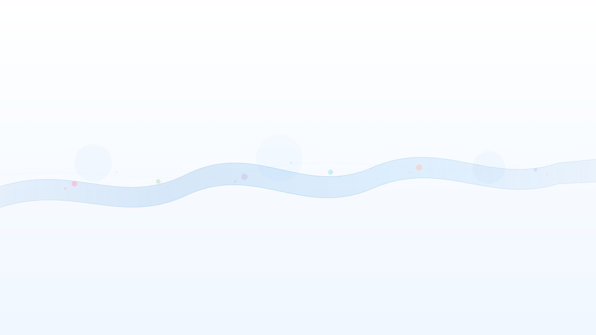

AI 时代的学习方式
当 AI 成为学习伙伴，我们该如何重新定义知识的获取？
学习的范式转移
在过去，学习意味着大量的阅读、记忆和重复练习。而今天，AI 工具正在重新定义学习的边界。从智能问答到代码辅助，从知识图谱到个性化推荐，AI 不再只是工具，而是成为了真正的学习伙伴。
这种转变不仅仅是效率的提升，更是思维方式的重构。
从记忆到理解
AI 帮我们处理信息存储，让我们专注于深度理解
从被动到主动
通过对话式学习，从被动接收变为主动探索
实践中的关键发现
在实际使用 AI 辅助学习的过程中，我发现了一些值得分享的经验：
💡 核心观点
最好的学习方式不是让 AI 替你思考，而是让 AI 帮你拓展思考的边界。提出好问题，比得到好答案更重要。
当你把 AI 当作一个知识渊博但需要引导的伙伴时，学习的效果会远超预期。关键在于提问的艺术和批判性思维的保持。
✦ 写在最后
AI 时代的学习，不是与机器竞争，而是与机器协作。
掌握 AI 工具的人，将拥有指数级的成长速度。
而这一切的起点，就是从今天开始尝试。
掌握 AI 工具的人，将拥有指数级的成长速度。
而这一切的起点，就是从今天开始尝试。